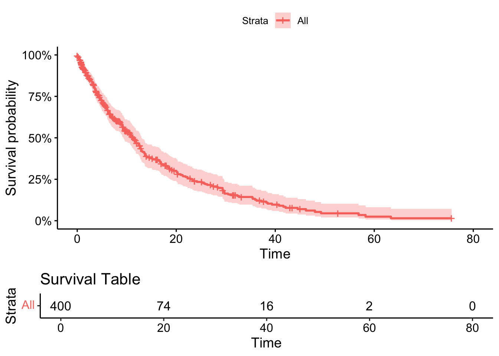
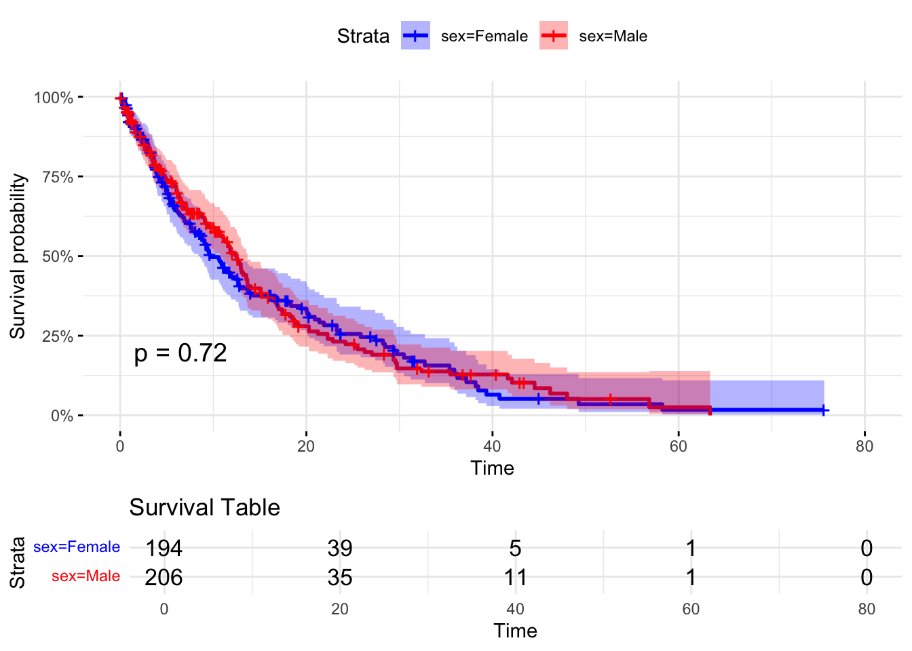

set.seed(2349871)11 Survival Analysis with Cox-PH
Set a random seed for reproducibility
11.1 Create dummy dataset
You would provide a real data set at this point. The data are basically a tibble/df in which you provide a list of times at which a case became either an event/failure or censored (lost-to-followup or end of study). The key variables are some kind of time to event variable and a status variable indicating whether the case is an event of censored at that time to event. Additional covariates to the model can be added at this stage (here age and sex are included).
# Number of observations
n <- 400
# Create a dummy dataset with group-specific event probabilities
set.seed(123)
dummy_data <- tibble(
time_to_event = rexp(n, rate = 0.1), # Generate random survival times
sex = sample(c("Male", "Female"), size = n, replace = TRUE),
age = rnorm(n, mean = 50, sd = 10),
status = ifelse(sex == "Male",
rbinom(n, size = 1, prob = 0.8), # Higher event probability for males
rbinom(n, size = 1, prob = 0.4)) # Lower event probability for females
)
# Display the first 50 rows
kable(dummy_data[1:50,])| time_to_event | sex | age | status |
|---|---|---|---|
| 8.4345726 | Female | 53.58856 | 1 |
| 5.7661027 | Female | 43.91443 | 1 |
| 13.2905487 | Female | 47.97759 | 1 |
| 0.3157736 | Female | 47.26752 | 0 |
| 0.5621098 | Male | 45.31300 | 0 |
| 3.1650122 | Female | 57.04167 | 0 |
| 3.1422729 | Male | 38.02636 | 0 |
| 1.4526680 | Male | 58.66366 | 1 |
| 27.2623646 | Male | 58.64152 | 1 |
| 0.2915345 | Female | 38.01378 | 0 |
| 10.0483006 | Male | 56.39492 | 1 |
| 4.8021473 | Female | 74.30227 | 0 |
| 2.8101363 | Female | 44.42785 | 0 |
| 3.7711783 | Male | 58.44904 | 1 |
| 1.8828404 | Female | 42.17798 | 1 |
| 8.4978613 | Male | 61.10711 | 1 |
| 15.6320354 | Female | 52.49825 | 0 |
| 4.7876042 | Male | 66.51915 | 0 |
| 5.9093484 | Male | 35.41029 | 1 |
| 40.4101171 | Female | 49.48702 | 0 |
| 8.4314973 | Female | 44.73075 | 1 |
| 9.6587121 | Female | 48.02735 | 0 |
| 14.8527579 | Female | 43.70421 | 0 |
| 13.4804449 | Female | 41.66156 | 1 |
| 11.6852898 | Female | 55.78722 | 1 |
| 16.0585234 | Female | 39.12419 | 1 |
| 14.9674287 | Female | 64.84031 | 0 |
| 15.7065255 | Male | 38.13793 | 1 |
| 0.3176774 | Male | 51.01079 | 1 |
| 5.9784969 | Male | 55.32989 | 0 |
| 21.6783975 | Female | 55.86735 | 1 |
| 5.0661573 | Male | 46.98253 | 1 |
| 2.5955782 | Male | 50.79502 | 1 |
| 25.9689212 | Male | 59.61264 | 1 |
| 12.2902573 | Female | 35.43534 | 1 |
| 7.9068176 | Female | 42.18260 | 0 |
| 6.2928008 | Male | 53.20402 | 1 |
| 12.5464100 | Female | 45.55218 | 0 |
| 5.8868464 | Male | 63.70004 | 1 |
| 11.2929003 | Female | 56.73254 | 1 |
| 4.2036480 | Male | 50.72167 | 1 |
| 72.1100758 | Female | 34.92243 | 1 |
| 8.4572197 | Female | 50.26100 | 0 |
| 2.2554201 | Female | 46.83584 | 1 |
| 11.0033882 | Male | 48.97653 | 0 |
| 22.4830569 | Male | 38.18441 | 1 |
| 13.6373430 | Female | 54.98658 | 1 |
| 5.7639167 | Female | 39.61044 | 0 |
| 27.2527585 | Female | 47.73778 | 0 |
| 13.1216304 | Female | 53.81426 | 1 |
11.2 Fit a Cox Proportional Hazards (Cox-PH) model
The example below applies a Cox-PH model which tests whether survival is explained by age and sex.
# Fit a Cox Proportional Hazards model
cox_model <- coxph(Surv(time_to_event, status) ~ age + sex, data = dummy_data)
# Summary of the Cox PH model
summary(cox_model)Call:
coxph(formula = Surv(time_to_event, status) ~ age + sex, data = dummy_data)
n= 400, number of events= 241
coef exp(coef) se(coef) z Pr(>|z|)
age -0.003303 0.996702 0.006417 -0.515 0.607
sexMale 0.802430 2.230955 0.140936 5.694 1.24e-08 ***
---
Signif. codes: 0 '***' 0.001 '**' 0.01 '*' 0.05 '.' 0.1 ' ' 1
exp(coef) exp(-coef) lower .95 upper .95
age 0.9967 1.0033 0.9842 1.009
sexMale 2.2310 0.4482 1.6925 2.941
Concordance= 0.594 (se = 0.02 )
Likelihood ratio test= 36.97 on 2 df, p=9e-09
Wald test = 34.31 on 2 df, p=4e-08
Score (logrank) test = 36.18 on 2 df, p=1e-08exp(coef) is essentially an odds ratio similar to those in a logistic regression.
In this example, being male carries a proportional hazard of 1.04 (95% CI 0.76 - 1.22) compared to being female.
If you like P values, Pr(>|z|) is exactly that.
11.3 Plot the survival curve as a null model (no strata)
ggsurvplot(survfit(cox_model),
data = dummy_data,
pval = TRUE,
risk.table = TRUE,
risk.table.title = "Survival Table",
surv.scale = "percent", # You can change this to other scales like "probability"
)
11.4 Plot the survival curve’s strata
# Plot separate survival curves for each sex without covariates
ggsurvplot(survfit(Surv(time_to_event, status) ~ sex, data = dummy_data),
data = dummy_data, pval = TRUE,
risk.table = TRUE, risk.table.title = "Survival Table",
surv.scale = "percent", # You can change this to other scales like "probability"
palette = c("blue", "red"), # Colors for the curves
conf.int = TRUE, # Show confidence intervals
ggtheme = theme_minimal())